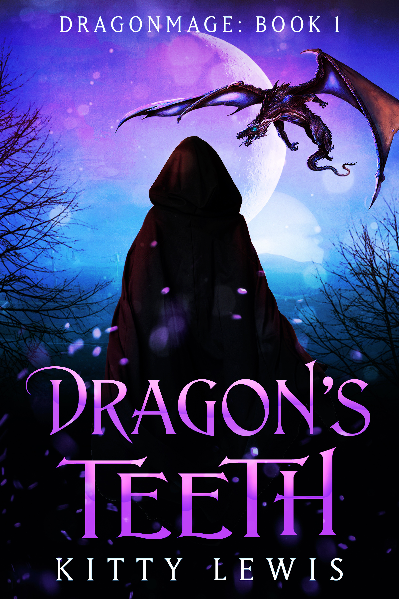

Upcoming Release
 The next book I'm excited to show you all is Dragon's Teeth, the first in my new Dragonmage series. This series follows Enkarini and her friends after the events of Wyld Magic, and their adventures in Trizes.
If the name Trizes seems familiar, that's because you've seen some of it already in my Northern Kingdoms series. While those books were centred around Prince Michael and his kingdom of Oakshire, Dragon's Teeth is set in the village of the same name, hidden deep in the mountains north of Oakshire. It's the beginning of an exciting story for Enkarini, and leads into a conclusion of the events of the Northern Kingdoms books.
Here's the blurb from my official site:
After the devastating attack on the People's towns, young mage Enkarini and her friends, Soris and Caiara, travel to the mysterious village known as Dragon's Teeth. They plan to spend some time among the experienced and powerful mages there, learning more about their abilities. Enkarini especially wants to find a way to control her own shadow magic, something she has grown more uneasy with since her father's death.
Their plans go awry, however, when they discover the Mayor of the town has placed blood bonds on them all, keeping them from leaving. Learning takes a back seat as the three find themselves caught up in the village's internal struggles.
Past Releases
I've written six books set in the same world, grouped into two series. You can get your own copies on Kobo by clicking the links below! They're also available on Amazon and Google Play, just search for Kitty Lewis!
Legends of the Lost Tribes
Northern Kingdoms
All of my books, and several short stories, are also available on my ko-fi page.